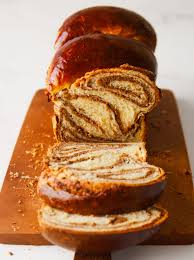

Cozonac is a traditional sweet bread that dates back to ancient Egypt. It was later influenced by the Greeks and Romans untill it eventually became a staple in Southeastern Europe. It is most popular in countries such as Romania, Moldova, and Bulgaria. This desert is especially prevalent in Christian holdiays such as Christmas and Easter and is a staple of these holidays in the countries listed above.
Once all thoes instructions are complete bake at 170 dgrees Celcius for around 50 minutes, or untill the top has risen out of the pan with a dark chocolate brown on top.
Media:
